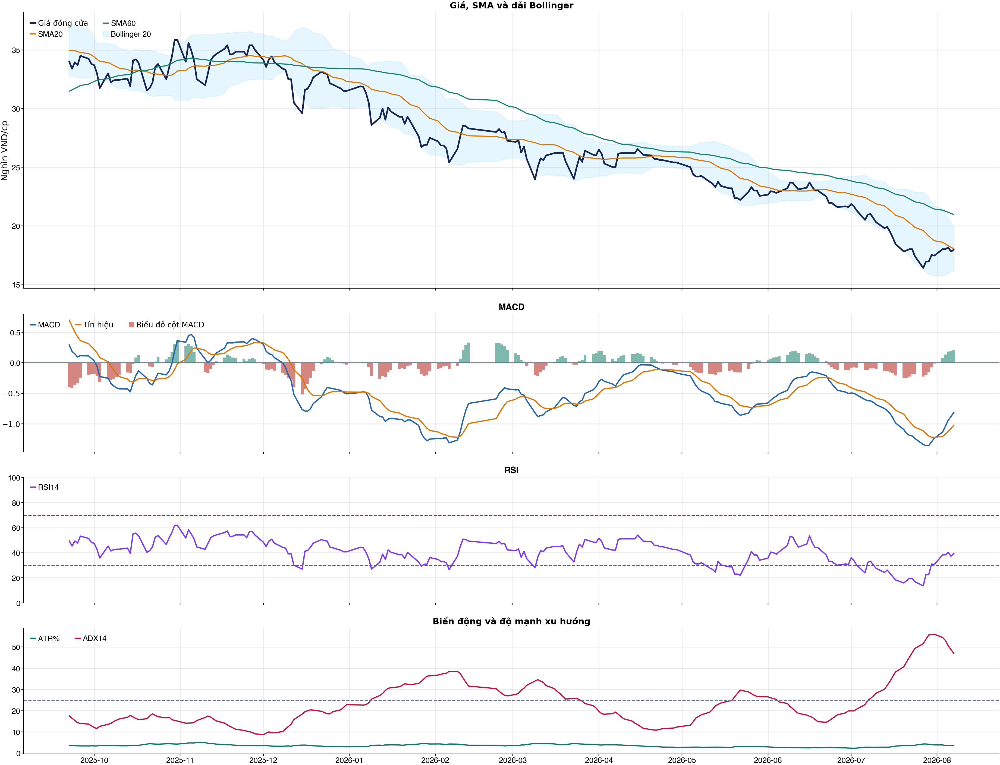
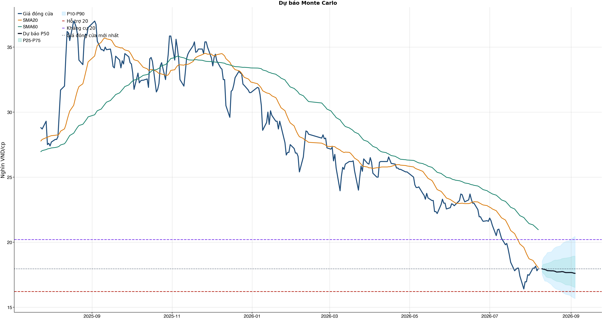
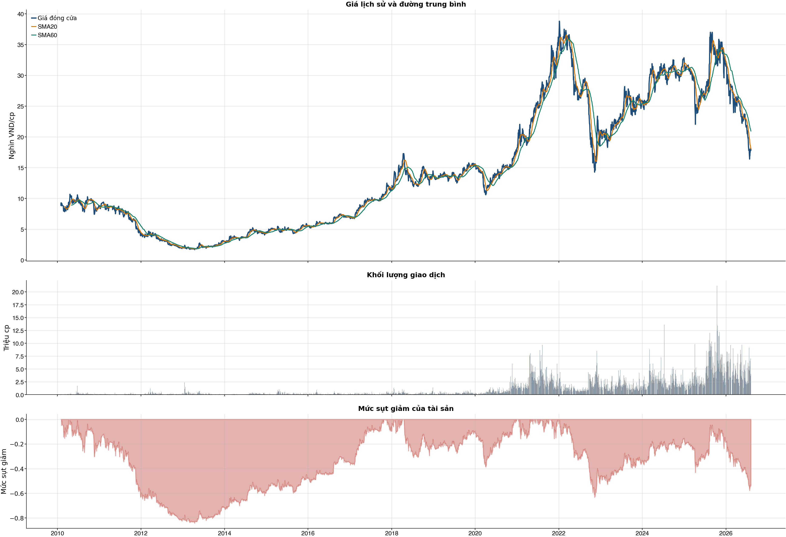

Kết quả chính
Tổng quan cơ bản
Biểu đồ kỹ thuật

Tín hiệu kỹ thuật
| Xu hướng | Cẩn thận | Giá nằm dưới SMA60. |
| MACD | Tích cực | MACD trên signal, histogram dương. |
| RSI14 | Yếu | RSI 39.4. |
| Bollinger | Ổn định | Giá nằm trong dải Bollinger. |
| ADX | Xu hướng giảm | ADX 47.1, -DI vượt +DI. |
| Thanh khoản | Thấp | 0.62 lần trung bình. |
| Stochastic | Hồi phục | %K nằm trên %D. |
So sánh mô hình
| XGBoost | 0.499 | AUC 0.492 |
| Logistic | 0.499 | AUC 0.497 |
| Đa số | 0.500 | Mốc so sánh |
Kiểm thử chiến lược ngoài mẫu sau chi phí
| Lợi nhuận ròng | 2.5% | 736 quan sát ngoài mẫu |
| Sharpe | 0.16 | Sau chi phí |
| Mức sụt giảm tối đa | -8.8% | 22 vòng giao dịch |
| Chi phí giả định | 50.0 bps | Một vòng mua và bán |
Mức độ quan trọng của đặc trưng
| close_vs_sma20 | 12.68 | Mức đóng góp |
| return_5d | 12.33 | Mức đóng góp |
| return_1d | 12.31 | Mức đóng góp |
| return_3d | 11.29 | Mức đóng góp |
| market_return_1d | 10.21 | Mức đóng góp |
| adx_14 | 9.99 | Mức đóng góp |
| return_2d | 9.88 | Mức đóng góp |
| return_skew_20d | 9.59 | Mức đóng góp |
Điều kiện phát hành tín hiệu
| AUC của mô hình | KHÔNG ĐẠT | Điều kiện phát hành tín hiệu |
| Độ chính xác cân bằng của mô hình | KHÔNG ĐẠT | Điều kiện phát hành tín hiệu |
| XGBoost vượt mô hình Logistic đối chứng | KHÔNG ĐẠT | Điều kiện phát hành tín hiệu |
| Xác suất tăng đạt ngưỡng | KHÔNG ĐẠT | Điều kiện phát hành tín hiệu |
| Bối cảnh kỹ thuật đạt ngưỡng | KHÔNG ĐẠT | Điều kiện phát hành tín hiệu |
| Tỷ lệ lợi nhuận/rủi ro đạt ngưỡng | ĐẠT | Điều kiện phát hành tín hiệu |
| Dữ liệu còn mới | ĐẠT | Điều kiện phát hành tín hiệu |
| Có khối lượng vị thế hợp lệ | ĐẠT | Điều kiện phát hành tín hiệu |
| Có kết quả kiểm thử chiến lược ngoài mẫu | ĐẠT | Điều kiện phát hành tín hiệu |
| Mẫu kiểm thử chiến lược đủ lớn | ĐẠT | Điều kiện phát hành tín hiệu |
| Kiểm thử chiến lược có lợi thế ròng | ĐẠT | Điều kiện phát hành tín hiệu |
Quản trị rủi ro
| Rủi ro/lệnh | 1.0% | 1,000,000 VND |
| Mức dừng lỗ | 17.01 | Rủi ro mỗi cổ phiếu 1.03 |
| Mục tiêu 1 | 20.20 | Lợi nhuận/rủi ro 2.09 |
| Mục tiêu 2 | 20.44 | Dự báo/kháng cự |
Phân tích cơ bản
| P/E | 11.47 | 2026-Q2 |
| P/B | 1.08 | 2026-Q2 |
| P/S | 6.04 | 2026-Q2 |
| ROE | 9.5% | 2026-Q2 |
| ROA | 4.8% | 2026-Q2 |
| Gross margin | 69.2% | 2026-Q2 |
| Net margin | 72.3% | 2026-Q2 |
| Debt/Equity | 0.98 | 2026-Q2 |
| Current ratio | 10.06 | 2026-Q2 |
| NPL | 0.0% | 2026-Q2 |
| Dividend yield | 0.0% | 2026-Q2 |
| Market cap | 20,143.8 tỷ | 2026-Q2 |
| Revenue Growth | -84.7% | 2026-Q2 YoY |
| Profit Growth | 276.7% | 2026-Q2 YoY |
| Dòng tiền từ HĐKD | -846.5 tỷ | 2026-Q2 |
| CAPEX | -58.4 tỷ | 2026-Q2 |
| Lợi nhuận sau thuế | 770.1 tỷ | 2026-Q2 |
| Lợi nhuận hoạt động | 823.1 tỷ | 2026-Q2 |
| Chi phí lãi vay | -19.3 tỷ | 2026-Q2 |
| Tiền và tương đương tiền | 2,605.3 tỷ | 2026-Q2 |
| Vay ngắn hạn | 2,223.4 tỷ | 2026-Q2 |
| Vay dài hạn | 14,435.5 tỷ | 2026-Q2 |
| Tổng tài sản | 39,470.8 tỷ | 2026-Q2 |
| Tổng nợ phải trả | 19,497.0 tỷ | 2026-Q2 |
| Vốn chủ sở hữu | 19,973.7 tỷ | 2026-Q2 |
| Khoản phải thu | 2,978.5 tỷ | 2026-Q2 |
| Hàng tồn kho | 29,488.1 tỷ | 2026-Q2 |
| Dòng tiền tự do (CFO - CAPEX) | -904.8 tỷ | 2026-Q2 |
| CFO / Lợi nhuận sau thuế | -1.10 | 2026-Q2 |
| Nợ vay ròng | 14,053.7 tỷ | 2026-Q2 |
| Nợ vay / Vốn chủ sở hữu | 0.83 | 2026-Q2 |
| Phải thu / Tổng tài sản | 7.5% | 2026-Q2 |
| Khả năng trả lãi (EBIT / lãi vay) | 42.64 | 2026-Q2 |
Tin tức doanh nghiệp
| Trạng thái | Có dữ liệu | research_only |
| Nguồn / số bài | VCI | 50 |
| Bài đủ timestamp | 50 | Chỉ các bài này mới được phép dùng point-in-time |
| Sentiment 5 ngày | 0.00 | 0.0 bài trước cutoff |
| Phương pháp | keyword_heuristic_v1 | Research only; chưa dùng làm tín hiệu mua/bán |
Dự báo ngắn hạn
| 2026-08-10 | 17.95 | P10 17.49 / P90 18.54 |
| 2026-08-11 | 17.92 | P10 17.24 / P90 18.79 |
| 2026-08-12 | 17.90 | P10 17.01 / P90 18.93 |
| 2026-08-13 | 17.86 | P10 17.00 / P90 19.03 |
| 2026-08-14 | 17.81 | P10 16.96 / P90 19.20 |
| 2026-08-17 | 17.79 | P10 16.74 / P90 19.25 |
| 2026-08-18 | 17.79 | P10 16.61 / P90 19.39 |
| 2026-08-19 | 17.78 | P10 16.52 / P90 19.52 |
Biểu đồ dự báo

Lịch sử giá và mức sụt giảm

Báo cáo dùng để học tập và lập kịch bản, không phải khuyến nghị mua/bán.
Phân tích AI có kiểm chứng
Trạng thái quyết định: NO_EDGE
Tóm tắt: ML decision hiện giữ nguyên NO_EDGE. News Reader đã trích đoạn có nguồn của 4 bài để phân loại chủ đề (ket_qua_kinh_doanh: 4, co_tuc_va_hanh_dong_doanh_nghiep: 3, vi_mo: 4, nganh: 3, rui_ro: 2), nhưng các trích đoạn này không tạo bằng chứng mới cho quyết định đầu tư.
Kỹ thuật: Artifact kỹ thuật: bias Suy yếu / cẩn thận; điểm -2. Chi tiết artifact: Xu hướng: Cẩn thận (Giá nằm dưới SMA60.); MACD: Tích cực (MACD trên signal, histogram dương.); RSI14: Yếu (RSI 39.4.); Bollinger: Ổn định (Giá nằm trong dải Bollinger.); ADX: Xu hướng giảm (ADX 47.1, -DI vượt +DI.); Thanh khoản: Thấp (0.62 lần trung bình.); Stochastic: Hồi phục (%K nằm trên %D.)
Cơ bản: Artifact cơ bản: Nhà Khang Điền; kỳ 2026-Q2; P/E 11.47; P/B 1.08; ROE 9.5%; ROA 4.8%; Debt/Equity 0.98; Revenue Growth -84.7%; Profit Growth 276.7%.
Tin tức: Đã đọc trích đoạn giới hạn của 4 bài; phân nhóm rule-based: ket_qua_kinh_doanh: 4, co_tuc_va_hanh_dong_doanh_nghiep: 3, vi_mo: 4, nganh: 3, rui_ro: 2. Tác động cần kiểm chứng: Đối chiếu doanh thu/lợi nhuận trong bài với BCTC và kỳ vọng thị trường. Kiểm tra ngày GDKHQ, tỷ lệ, nguồn chi trả và nguy cơ pha loãng trước khi đánh giá tác động. Đối chiếu thời điểm công bố và kênh tác động lãi suất/tỷ giá với mô hình kinh doanh. So sánh tín hiệu ngành với thị phần, nhu cầu và đối thủ trước khi suy luận cho riêng doanh nghiệp. Xác minh công bố chính thức, phạm vi ảnh hưởng và khả năng định lượng rủi ro. Đây không phải sentiment hay dự báo tác động giá.
Live research: Live snapshot lấy lúc 2026-08-09T08:30:44.255030+00:00; News Reader đọc được 4 bài. ML có 5 lý do guard và vẫn là NO_EDGE. Không dùng tin live để train/backtest.
Rủi ro cần kiểm chứng
- ML guard: AUC 0.492 < 0.540
- ML guard: Balanced accuracy 0.499 < 0.520
- ML guard: XGBoost chưa vượt logistic baseline: AUC XGBoost=0.49235002418964685, AUC logistic=0.49668148282535074
- ML guard: Probability 48.4% < 55.0%
- ML guard: Technical score -2 < 2
- News Reader: Đối chiếu doanh thu/lợi nhuận trong bài với BCTC và kỳ vọng thị trường.
- News Reader: Kiểm tra ngày GDKHQ, tỷ lệ, nguồn chi trả và nguy cơ pha loãng trước khi đánh giá tác động.
- News Reader: Đối chiếu thời điểm công bố và kênh tác động lãi suất/tỷ giá với mô hình kinh doanh.
- News Reader: So sánh tín hiệu ngành với thị phần, nhu cầu và đối thủ trước khi suy luận cho riêng doanh nghiệp.
- News Reader: Xác minh công bố chính thức, phạm vi ảnh hưởng và khả năng định lượng rủi ro.
- Chỉ lưu trích đoạn giới hạn để kiểm chứng nguồn; không lưu hay hiển thị toàn văn bài báo.
- Phân nhóm là keyword rule-based để định tuyến research, không phải sentiment hay dự báo tác động giá.
- Dữ liệu News Reader chỉ phục vụ research/report; không dùng làm feature train/backtest khi chưa có lịch sử available_at point-in-time.
- Tin live/trích đoạn cần mở URL gốc để kiểm chứng bối cảnh, số liệu và thời điểm trước khi sử dụng.
Bằng chứng
- ML decision artifact: NO_EDGE. AUC 0.492 < 0.540
- ML decision artifact: NO_EDGE. Balanced accuracy 0.499 < 0.520
- ML decision artifact: NO_EDGE. XGBoost chưa vượt logistic baseline: AUC XGBoost=0.49235002418964685, AUC logistic=0.49668148282535074
- ML decision artifact: NO_EDGE. Probability 48.4% < 55.0%
- ML decision artifact: NO_EDGE. Technical score -2 < 2
- News Reader [vietnam.vn]: SHS khuyến nghị theo dõi cổ phiếu KDH - vietnam.vn | nhóm: ket_qua_kinh_doanh, vi_mo (2026-08-04T14:43:35+00:00)
- News Reader [VietstockFinance]: KDH: Khuyến nghị THEO DÕI với giá mục tiêu 19,600 đồng/cổ phiếu - VietstockFinance | nhóm: ket_qua_kinh_doanh, co_tuc_va_hanh_dong_doanh_nghiep, vi_mo, nganh (2026-08-05T22:16:57+00:00)
- News Reader [Nhadautu.vn]: Trước thềm nâng hạng: 4 'ẩn số' BSR, DGC, GEE và KDH - Nhadautu.vn | nhóm: ket_qua_kinh_doanh, co_tuc_va_hanh_dong_doanh_nghiep, vi_mo, nganh, rui_ro (2026-08-06T07:26:01+00:00)
- News Reader [hangthat.thuonghieucongluan.com.vn]: Dự báo chứng khoán ngày 5/8: HPG tiếp tục được đánh giá tích cực, theo dõi BMP và KDH - hangthat.thuonghieucongluan.com.vn | nhóm: ket_qua_kinh_doanh, co_tuc_va_hanh_dong_doanh_nghiep, vi_mo, nganh, rui_ro (2026-08-05T01:25:00+00:00)
Báo cáo chỉ tổng hợp artifact đã lưu để nghiên cứu; không phải khuyến nghị mua/bán. Quyết định và vị thế vẫn bị khóa theo signal_decision.json.
Tin web đã lấy
| Nguồn | Tiêu đề | Thời điểm | Link |
|---|---|---|---|
| vietnam.vn | SHS khuyến nghị theo dõi cổ phiếu KDH - vietnam.vn | 2026-08-04T14:43:35+00:00 | Mở nguồn |
| VietstockFinance | KDH: Khuyến nghị THEO DÕI với giá mục tiêu 19,600 đồng/cổ phiếu - VietstockFinance | 2026-08-05T22:16:57+00:00 | Mở nguồn |
| Nhadautu.vn | Trước thềm nâng hạng: 4 'ẩn số' BSR, DGC, GEE và KDH - Nhadautu.vn | 2026-08-06T07:26:01+00:00 | Mở nguồn |
| hangthat.thuonghieucongluan.com.vn | Dự báo chứng khoán ngày 5/8: HPG tiếp tục được đánh giá tích cực, theo dõi BMP và KDH - hangthat.thuonghieucongluan.com.vn | 2026-08-05T01:25:00+00:00 | Mở nguồn |
| CafeF | KDH – Cập nhật KQKD Q2.2026 - CafeF | 2026-08-03T09:58:31+00:00 | Mở nguồn |
News Reader: bài đã đọc và trích đoạn
| Nguồn | Tiêu đề | Nhóm | Thời điểm | Trích đoạn đã đọc | Link |
|---|---|---|---|---|---|
| vietnam.vn | SHS khuyến nghị theo dõi cổ phiếu KDH - vietnam.vn | ket_qua_kinh_doanh, vi_mo | 2026-08-04T14:43:35+00:00 | Xem trích đoạnSKĐS - Chứng khoán SHS đưa cổ phiếu KDH của Tập đoàn Khang Điền vào danh mục khuyến nghị theo dõi do một số biến động tại các dự án đang triển khai. Theo SHS, lợi thế của CTCP Đầu tư và Kinh doanh Nhà Khang Điền (mã chứng khoán: KDH) nằm ở quỹ đất tập trung tại TPHCM cũ và năng lực triển khai đã được kiểm chứng. Tuy nhiên, giá trị tài sản chỉ thực sự được xác nhận khi các dự án chuyển thành hợp đồng bán, tiền thu và dòng tiền kinh doanh. Trong bối cảnh thanh khoản bất động sản suy yếu, lãi suất cao, nguồn cung tăng và chính sách đất đai tiếp tục điều chỉnh, vị trí tốt không còn đồng nghĩa với khả năng bán hàng nhanh. Kết quả 6T2026 cho thấy, hoạt động cốt lõi của KDH đang ở vùng trũng. Doanh thu thuần chỉ đạt 442 tỷ đồng, giảm 74,9% so với cùng kỳ. Người mua trả tiền trước còn 399 tỷ đồng và dòng tiền kinh doanh âm 1.480 tỷ đồng. Lợi nhuận trước thuế đạt 1.156 tỷ đồng nhưng gần như toàn bộ đến từ lợi nhuận một lần liên quan đến An Lập và Bình Trưng Mới. Danh mục dự án có quy mô lớn nhưng mức độ sẵn sàng thương mại hóa phân hóa rõ. Gladia và KCN Lê Minh Xuân mở rộng là hai tài sản gần dòng tiền nhất. Bình Trưng 18 ha, The Solina và An Lập thuộc lớp trung hạn. Trong khi đó, Tân Tạo và Phong Phú 2 có quy mô lớn nhưng chưa đủ cơ sở để hỗ trợ kết quả kinh doanh gần hạn. Như vậy, SHS cho rằng, phần tài sản sẵn sàng tạo tiền hiện còn nhỏ so với tổng quy mô vốn đã đầu tư. SHS cũng chỉ ra, bảng cân đối mở rộng của KDH nhanh hơn khả năng tạo tiền. Vốn gắn với dự án đạt 32.565 tỷ đồng, chiếm 82,5% tổng tài sản, tổng nợ vay tăng 64,1% trong 6T2026 lên 16.659 tỷ đồng và nợ vay ròng/VCSH thuộc cổ đông KDH đạt 71,2%. Dự phóng của SHS đối với kết quả kinh doanh năm 2026 của KDH ước đạt doanh thu 1.422 tỷ và lợi nhuận sau thuế cổ đông công ty mẹ đạt 1.374 tỷ. Từ những dữ liệu trên, SHS khuyến nghị theo dõi đối với cổ phiếu KDH. Khả năng đánh giá lại phụ thuộc vào sự phục hồi của tiến độ bán hàng, dòng tiền kinh doanh và các mốc thương mại hóa rõ ràng hơn tại nhóm dự án gần và trung hạn. Nguồn: https://suckhoedoisong.vn/shs-khuyen-nghi-theo-doi-co-phieu-kdh-169260804202243584.htm Vụ 4 người bị sóng cuốn: Sơn Trà đẹp mê hoặc, tuyệt đối không vào khu vực 'có thể chết người' Ban hành Nghị quyết về Chương trình hành động của Chính phủ về đổi mới mô hình phát triển đất nước Đánh thức giác quan với không gian Tây Nguyên mới tại Làng Văn hóa - Du lịch các dân tộc Việt Nam Hưng Yên | Mở nguồn |
| VietstockFinance | KDH: Khuyến nghị THEO DÕI với giá mục tiêu 19,600 đồng/cổ phiếu - VietstockFinance | ket_qua_kinh_doanh, co_tuc_va_hanh_dong_doanh_nghiep, vi_mo, nganh | 2026-08-05T22:16:57+00:00 | Xem trích đoạnChủ Nhật, 09/08/2026 Vietstock ( VN | EN ) Đấu trường chứng khoán Diễn đàn IR Awards Dịch vụ Vietstock ( VN | EN ) Đấu trường chứng khoán Diễn đàn IR Awards Dịch vụ Đấu trường chứng khoán Diễn đàn IR Awards Dịch vụ Vĩ mô Dữ liệu Cập nhật chỉ số vĩ mô mới nhất 1. Tài khoản quốc gia (GDP) Tổng sản phẩm trong nước (GDP) 2. Chỉ số giá và lạm phát Chỉ số giá và lạm phát cơ bản 3. Thị trường lao động và việc làm Chi tiết Thị trường lao động và việc làm 4. Thị trường bán lẻ Thị trường bán lẻ hàng hóa và dịch vụ 5. Sản xuất công nghiệp Chi tiết sản xuất toàn ngành công nghiệp 6. Bất động sản và xây dựng Chi tiết Bất động sản và Xây dựng 7. Cán cân thanh toán quốc tế Tổng hợp giao dịch kinh tế quốc tế 8. Chính sách tài khóa và tài chính quốc gia Chi tiết quản lý thu, chi ngân sách và nợ công, điều tiết kinh tế 9. Chính sách tiền tệ Chính sách tiền tệ: điều tiết cung tiền, lãi suất, ổn định giá 10. Đầu tư trực tiếp nước ngoài (FDI) Vốn nước ngoài vào sản xuất, kinh doanh nội địa 11. Xuất nhập khẩu theo quốc gia và hàng hóa Chi tiết xuất nhập khẩu theo quốc gia và hàng hóa cụ thể Báo cáo phân tích Báo cáo phân tích vĩ mô mới nhất Thuật ngữ Các thuật ngữ vĩ mô Tin tức Tin tức thị trường vĩ mô mới nhất Ngành Dữ liệu ngành Tổng quan ngành Ngành chi tiết Thông tin chi tiết một ngành Năng lượng Chi tiết ngành Năng lượng Nguyên vật liệu Chi tiết ngành Nguyên vật liệu Công nghiệp Chi tiết ngành Công nghiệp Tiêu dùng không thiết yếu Chi tiết ngành Tiêu dùng không thiết yếu Tiêu dùng thiết yếu Chi tiết ngành Tiêu dùng thiết yếu Chăm sóc sức khỏe Chi tiết ngành Chăm sóc sức khỏe Tài chính Chi tiết ngành Tài chính Công nghệ thông tin Chi tiết ngành Công nghệ thông tin Dịch vụ truyền thông Chi tiết ngành Dịch vụ truyền thông Tiện ích Chi tiết ngành Tiện ích Bất động sản Chi tiết ngành Bất động sản Doanh nghiệp Doanh nghiệp A-Z Danh sách doanh nghiệp đầy đủ Công ty phi tài chính Danh sách doanh nghiệp phi tài chính Ngân hàng Danh sách ngân hàng Công ty chứng khoán Danh sách công ty chứng khoán Công ty bảo hiểm Danh sách công ty bảo hiểm Công ty quản lý quỹ Danh sách công ty quản lý quỹ Công ty kiểm toán Danh sách công ty kiểm toán Hồ sơ lãnh đạo Hồ sơ lãnh đạo doanh nghiệp và người có liên quan Lịch sự kiện Sự kiện doanh nghiệp Niêm yết Sự kiện niêm yết cổ phiếu Cổ tức và phát hành thêm Sự kiện doanh nghiệp trả cổ tức và phát hành thêm Đại hội đồng cổ đông Sự kiện đại hội cổ | Mở nguồn |
| Nhadautu.vn | Trước thềm nâng hạng: 4 'ẩn số' BSR, DGC, GEE và KDH - Nhadautu.vn | ket_qua_kinh_doanh, co_tuc_va_hanh_dong_doanh_nghiep, vi_mo, nganh, rui_ro | 2026-08-06T07:26:01+00:00 | Xem trích đoạnBSR, DGC, GEE và KDH vẫn xuất hiện trong danh mục dự báo của MBS nhưng lại bị loại khỏi danh sách của Vietcap. Những dự đoán trái chiều của các công ty chứng khoán một trong những điểm đáng chú ý trước kỳ nâng hạng của thị trường chứng khoán Việt Nam. Phát triển đồng bộ những mảnh ghép của thị trường vốn Việt Nam Dòng vốn FII chưa tương xứng tiềm năng của TTCK Việt Nam Ngày 21/8 tới, FTSE Russell sẽ công bố danh mục cổ phiếu chính thức được đưa vào bộ chỉ số FTSE GEIS trước khi có hiệu lực từ ngày 21/9/2026. Trước thời điểm này, nhiều công ty chứng khoán đã công bố báo cáo dự báo danh mục cổ phiếu có khả năng được bổ sung vào chỉ số. Theo báo cáo của Chứng khoán MB (MBS), BSR, DGC, GEE và KDH đều nằm trong danh sách cổ phiếu được dự báo có mặt trong FTSE GEIS. Trong đó, MBS ước tính dòng vốn ETF có thể phân bổ vào BSR khoảng 10 triệu USD, DGC và GEE cùng khoảng 8 triệu USD, còn KDH khoảng 7 triệu USD sau khi quá trình bổ sung hoàn tất theo lộ trình của FTSE. Đây đều là những cổ phiếu nằm ở nửa dưới bảng xếp hạng về giá trị mua ròng dự kiến, thấp hơn đáng kể so với các mã dẫn đầu như VIC, VHM, SHB hay MSN. Trong khi đó, báo cáo do Chứng khoán Vietcap công bố trước đó lại không còn xuất hiện BSR, DGC, GEE và KDH trong danh mục dự báo. Theo Vietcap, BSR và KDH không còn đáp ứng ngưỡng vốn hóa khả dụng cho đầu tư tối thiểu theo dữ liệu cập nhật. Báo cáo cũng cho biết DGC và GEE không còn nằm trong danh sách dự báo của đơn vị này. Ở chiều ngược lại, Vietcap bổ sung thêm 10 cổ phiếu gồm VPB, MCH, VPL, HDB, TCX, VCK, SSB, MSB, TPB và HCM, cho rằng các mã này đã đáp ứng điều kiện theo bộ dữ liệu cập nhật hơn. Báo cáo của Vietcap cho biết việc sàng lọc được thực hiện theo các tiêu chí của FTSE GEIS, bao gồm vốn hóa khả dụng cho đầu tư, tỷ lệ tự do chuyển nhượng (free float), room sở hữu nước ngoài còn lại và thanh khoản. Công ty sử dụng dữ liệu cập nhật đến ngày 30/6/2026 để xây dựng mô hình dự báo. Trong khi đó, MBS cho biết các số liệu trong báo cáo là ước tính của đơn vị nghiên cứu và được tính toán trên dữ liệu tại ngày 30/7/2026. Báo cáo không giải thích chi tiết tiêu chí sàng lọc đối với từng cổ phiếu. Do đó, danh mục dự báo giữa hai công ty chứng khoán xuất hiện một số khác biệt. Danh sách chính thức các cổ phiếu Việt Nam được đưa vào FTSE GEIS vẫn sẽ do FTSE Russell công bố vào ngày 21/8/2026, trước khi có hiệu lực từ 21/9/2026. Đáng chú ý, diễn biến thị giá | Mở nguồn |
| hangthat.thuonghieucongluan.com.vn | Dự báo chứng khoán ngày 5/8: HPG tiếp tục được đánh giá tích cực, theo dõi BMP và KDH - hangthat.thuonghieucongluan.com.vn | ket_qua_kinh_doanh, co_tuc_va_hanh_dong_doanh_nghiep, vi_mo, nganh, rui_ro | 2026-08-05T01:25:00+00:00 | Xem trích đoạnChống hàng giả Bảo vệ người tiêu dùng Chuyển động 389 Cảnh báo Kinh tế Tài chính - Chứng khoán Nhịp sống số Nông nghiệp sạch Thương hiệu Hàng hiệu Tiêu dùng Ý kiến người tiêu dùng Các công ty chứng khoán tiếp tục duy trì quan điểm tích cực đối với cổ phiếu HPG nhờ triển vọng tăng trưởng và định giá hấp dẫn. Bên cạnh đó, BMP được đánh giá hưởng lợi từ nhu cầu xây dựng, trong khi KDH được khuyến nghị theo dõi trước bối cảnh thị trường bất động sản còn nhiều thách thức. CTCK Bảo Việt (BVSC) nâng giá mục tiêu đối với cổ phiếu HPG lên 33.200 đồng/cổ phiếu và tiếp tục duy trì khuyến nghị Outperform. Theo BVSC, triển vọng của Hòa Phát được hỗ trợ bởi vị thế dẫn đầu ngành thép, lợi ích từ chính sách áp thuế chống bán phá giá đối với thép cuộn cán nóng (HRC), cùng dư địa tăng trưởng từ các dự án Dung Quất 2, thép đường ray, Hòa Phát Phú Yên và các dự án hạ tầng lớn. Công ty cũng kỳ vọng biên lợi nhuận sẽ cải thiện nhờ khai thác mỏ quặng Quý Xa. Ở góc nhìn khác, CTCK Agriseco cho rằng nhu cầu thép xây dựng sẽ tiếp tục tăng khi các dự án hạ tầng và giao thông trọng điểm được đẩy nhanh tiến độ trong nửa cuối năm. Với lợi thế về quy mô và thị phần, HPG được kỳ vọng gia tăng sản lượng tiêu thụ, qua đó thúc đẩy doanh thu và lợi nhuận. Theo Agriseco, HPG hiện giao dịch ở mức định giá hấp dẫn so với trung bình lịch sử, phù hợp với chiến lược tích lũy và nắm giữ trung, dài hạn. BMP được kỳ vọng hưởng lợi từ đầu tư công và giá nguyên liệu thấp CTCK Agriseco đánh giá tích cực đối với cổ phiếu BMP sau khi doanh nghiệp ghi nhận lợi nhuận quý II/2026 đạt mức cao kỷ lục. Theo Agriseco, biên lợi nhuận gộp của BMP tiếp tục duy trì ở mức cao nhờ hưởng lợi từ giá hạt nhựa PVC thấp và kiểm soát tốt chi phí hoạt động. Trong nửa cuối năm, nhu cầu ống nhựa được kỳ vọng tăng khi giải ngân đầu tư công được đẩy mạnh và hoạt động xây dựng sôi động hơn. Ngoài triển vọng tăng trưởng lợi nhuận, BMP còn được đánh giá hấp dẫn nhờ chính sách cổ tức tiền mặt ổn định và tỷ suất cổ tức ở mức cao. Đối với cổ phiếu KDH, CTCK SHS duy trì khuyến nghị theo dõi. Theo SHS, KDH vẫn sở hữu lợi thế về quỹ đất tại TP.HCM và năng lực triển khai dự án, tuy nhiên hiệu quả kinh doanh ngắn hạn còn chịu áp lực khi doanh thu, dòng tiền từ hoạt động cốt lõi suy giảm và thị trường bất động sản chưa thực sự phục hồi. SHS cho rằng việc đánh giá lại triển vọng của KDH sẽ phụ thuộc vào tiến độ bán hàng, khả năng cải thiện | Mở nguồn |
Chi tiết báo cáo tài chính
Kết quả kinh doanh — 4 kỳ gần nhất
Hiển thị 35 dòng đầu; mở CSV đầy đủ.
| Khoản mục | 2026-Q2 | 2026-Q1 | 2025-Q4 | 2025-Q3 |
|---|---|---|---|---|
| Doanh thu bán hàng và cung cấp dịch vụ | 238.5 tỷ | 281.4 tỷ | 1,820.0 tỷ | 1,098.5 tỷ |
| Các khoản giảm trừ doanh thu | -77.9 tỷ | 0.0 tỷ | -26.3 tỷ | -0.2 tỷ |
| Doanh thu thuần | 160.6 tỷ | 281.4 tỷ | 1,793.6 tỷ | 1,098.2 tỷ |
| Giá vốn hàng bán | -80.0 tỷ | -98.5 tỷ | -526.3 tỷ | -322.5 tỷ |
| Lợi nhuận gộp | 80.6 tỷ | 182.8 tỷ | 1,267.4 tỷ | 775.7 tỷ |
| Doanh thu hoạt động tài chính | 906.2 tỷ | 7.1 tỷ | 11.7 tỷ | 4.9 tỷ |
| Chi phí tài chính | -29.7 tỷ | -17.3 tỷ | -75.4 tỷ | -2.7 tỷ |
| Chi phí lãi vay | -19.3 tỷ | -5.6 tỷ | 0.0 tỷ | 0.0 tỷ |
| Chi phí bán hàng | -74.0 tỷ | -36.1 tỷ | -184.6 tỷ | -71.5 tỷ |
| Chi phí quản lý doanh nghiệp | -59.9 tỷ | -60.0 tỷ | -61.4 tỷ | -47.7 tỷ |
| Lãi/(lỗ) từ hoạt động kinh doanh | 823.1 tỷ | 76.5 tỷ | 957.7 tỷ | 658.8 tỷ |
| Thu nhập khác | 12.2 tỷ | 290.5 tỷ | 30.6 tỷ | 8.7 tỷ |
| Chi phí khác | -35.1 tỷ | -11.4 tỷ | -4.7 tỷ | -13.9 tỷ |
| Thu nhập khác, ròng | -22.8 tỷ | 279.1 tỷ | 25.8 tỷ | -5.2 tỷ |
| Lãi/(lỗ) từ công ty liên doanh | 0.0 tỷ | 0.0 tỷ | 0.0 tỷ | 0.0 tỷ |
| Lãi/(lỗ) trước thuế | 800.3 tỷ | 355.7 tỷ | 983.5 tỷ | 653.5 tỷ |
| Thuế thu nhập doanh nghiệp - hiện thời | -29.6 tỷ | -31.7 tỷ | -150.8 tỷ | -79.8 tỷ |
| Thuế thu nhập doanh nghiệp - hoãn lại | -0.7 tỷ | 3.1 tỷ | -46.9 tỷ | -47.9 tỷ |
| Chi phí thuế thu nhập doanh nghiệp | -30.3 tỷ | -28.6 tỷ | -197.7 tỷ | -127.6 tỷ |
| Lãi/(lỗ) thuần sau thuế | 770.1 tỷ | 327.0 tỷ | 785.8 tỷ | 525.9 tỷ |
| Lợi ích của cổ đông thiểu số | 20.2 tỷ | 45.7 tỷ | 297.1 tỷ | 290.1 tỷ |
| Lợi nhuận của Cổ đông của Công ty mẹ | 749.8 tỷ | 281.4 tỷ | 488.7 tỷ | 235.8 tỷ |
| Lãi cơ bản trên cổ phiếu (VND) | 0.0 tỷ | 0.0 tỷ | 0.0 tỷ | 0.0 tỷ |
| Lãi trên cổ phiếu pha loãng (VND) | 0.0 tỷ | 0.0 tỷ | 0.0 tỷ | 0.0 tỷ |
| Lãi/(lỗ) từ công ty liên doanh (từ năm 2015) | 0.0 tỷ | 0.0 tỷ | 0.0 tỷ | 0.0 tỷ |
Bảng cân đối kế toán — 4 kỳ gần nhất
Hiển thị 35 dòng đầu; mở CSV đầy đủ.
| Khoản mục | 2026-Q2 | 2026-Q1 | 2025-Q4 | 2025-Q3 |
|---|---|---|---|---|
| TÀI SẢN NGẮN HẠN | 35,453.5 tỷ | 37,310.7 tỷ | 31,619.1 tỷ | 30,594.4 tỷ |
| Tiền và tương đương tiền | 2,605.3 tỷ | 3,613.8 tỷ | 2,544.3 tỷ | 2,378.2 tỷ |
| Tiền | 2,417.0 tỷ | 2,514.1 tỷ | 1,944.5 tỷ | 888.1 tỷ |
| Các khoản tương đương tiền | 188.3 tỷ | 1,099.7 tỷ | 599.8 tỷ | 1,490.1 tỷ |
| Đầu tư ngắn hạn | 284.5 tỷ | 210.8 tỷ | 211.0 tỷ | 304.5 tỷ |
| Đầu tư ngắn hạn | 0.0 tỷ | 0.0 tỷ | 0.0 tỷ | 0.0 tỷ |
| Dự phòng giảm giá | 0.0 tỷ | 0.0 tỷ | 0.0 tỷ | 0.0 tỷ |
| Các khoản phải thu | 2,978.5 tỷ | 4,260.6 tỷ | 5,482.1 tỷ | 4,715.7 tỷ |
| Phải thu khách hàng | 380.0 tỷ | 1,249.6 tỷ | 1,262.0 tỷ | 986.6 tỷ |
| Trả trước người bán | 1,967.7 tỷ | 2,125.0 tỷ | 3,279.5 tỷ | 2,594.7 tỷ |
| Phải thu nội bộ | 0.0 tỷ | 0.0 tỷ | 0.0 tỷ | 0.0 tỷ |
| Phải thu hợp đồng xây dựng đang thực hiện | 0.0 tỷ | 0.0 tỷ | 0.0 tỷ | 0.0 tỷ |
| Phải thu khác | 630.9 tỷ | 886.0 tỷ | 940.6 tỷ | 1,134.4 tỷ |
| Dự phòng nợ khó đòi | 0.0 tỷ | 0.0 tỷ | 0.0 tỷ | 0.0 tỷ |
| Hàng tồn kho, ròng | 29,488.1 tỷ | 29,125.9 tỷ | 23,260.0 tỷ | 23,086.4 tỷ |
| Hàng tồn kho | 29,488.1 tỷ | 29,125.9 tỷ | 23,260.0 tỷ | 23,086.4 tỷ |
| Dự phòng giảm giá hàng tồn kho | 0.0 tỷ | 0.0 tỷ | 0.0 tỷ | 0.0 tỷ |
| Tài sản lưu động khác | 97.1 tỷ | 99.6 tỷ | 121.8 tỷ | 109.5 tỷ |
| Chi phí trả trước ngắn hạn | 10.6 tỷ | 50.1 tỷ | 32.9 tỷ | 6.9 tỷ |
| Thuế GTGT được khấu trừ | 84.1 tỷ | 47.3 tỷ | 54.6 tỷ | 100.3 tỷ |
| Phải thu thuế khác | 2.3 tỷ | 2.3 tỷ | 34.3 tỷ | 2.3 tỷ |
| Tài sản lưu động khác | 0.0 tỷ | 0.0 tỷ | 0.0 tỷ | 0.0 tỷ |
| TÀI SẢN DÀI HẠN | 4,017.3 tỷ | 2,551.2 tỷ | 2,454.9 tỷ | 2,486.5 tỷ |
| Phải thu dài hạn | 62.0 tỷ | 62.1 tỷ | 62.4 tỷ | 67.6 tỷ |
| Phải thu khách hàng dài hạn | 52.3 tỷ | 52.3 tỷ | 52.7 tỷ | 55.7 tỷ |
| Phải thu nội bộ dài hạn | 0.0 tỷ | 0.0 tỷ | 0.0 tỷ | 0.0 tỷ |
| Phải thu dài hạn khác | 12.4 tỷ | 12.4 tỷ | 12.4 tỷ | 14.6 tỷ |
| Dự phòng phải thu dài hạn | -2.7 tỷ | -2.7 tỷ | -2.7 tỷ | -2.7 tỷ |
| Tài sản cố định | 63.0 tỷ | 64.9 tỷ | 66.6 tỷ | 68.4 tỷ |
| GTCL TSCĐ hữu hình | 63.0 tỷ | 64.9 tỷ | 66.6 tỷ | 68.4 tỷ |
| Nguyên giá TSCĐ hữu hình | 177.1 tỷ | 177.1 tỷ | 177.0 tỷ | 177.0 tỷ |
| Khấu hao lũy kế TSCĐ hữu hình | -114.1 tỷ | -112.2 tỷ | -110.4 tỷ | -108.5 tỷ |
| GTCL tài sản thuê tài chính | 0.0 tỷ | 0.0 tỷ | 0.0 tỷ | 0.0 tỷ |
| Nguyên giá tài sản thuê tài chính | 0.0 tỷ | 0.0 tỷ | 0.0 tỷ | 0.0 tỷ |
| Khấu hao lũy kế tài sản thuê tài chính | 0.0 tỷ | 0.0 tỷ | 0.0 tỷ | 0.0 tỷ |
Lưu chuyển tiền tệ — 4 kỳ gần nhất
Hiển thị 35 dòng đầu; mở CSV đầy đủ.
| Khoản mục | 2026-Q2 | 2026-Q1 | 2025-Q4 | 2025-Q3 |
|---|---|---|---|---|
| Lợi nhuận/(lỗ) trước thuế | 800.3 tỷ | 355.7 tỷ | 983.5 tỷ | 653.5 tỷ |
| Khấu hao TSCĐ và BĐSĐT | 3.2 tỷ | 3.8 tỷ | 2.9 tỷ | 3.7 tỷ |
| Chi phí dự phòng | 0.0 tỷ | -0.1 tỷ | 0.0 tỷ | -0.0 tỷ |
| Lãi/lỗ chênh lệch tỷ giá hối đoái do đánh giá lại các khoản mục tiền tệ có gốc ngoại tệ | 0.0 tỷ | 0.0 tỷ | 0.0 tỷ | 0.0 tỷ |
| Lãi/(lỗ) từ thanh lý tài sản cố định | 0.0 tỷ | 0.0 tỷ | 0.0 tỷ | 0.0 tỷ |
| (Lãi)/lỗ từ hoạt động đầu tư | -906.2 tỷ | -292.3 tỷ | -11.7 tỷ | -4.9 tỷ |
| Chi phí lãi vay | 24.9 tỷ | 0.0 tỷ | 0.0 tỷ | 0.0 tỷ |
| Thu lãi và cổ tức | 0.0 tỷ | 0.0 tỷ | 0.0 tỷ | 0.0 tỷ |
| Lợi nhuận/(lỗ) từ hoạt động kinh doanh trước những thay đổi vốn lưu động | -77.8 tỷ | 67.1 tỷ | 974.7 tỷ | 652.3 tỷ |
| (Tăng)/giảm các khoản phải thu | 476.8 tỷ | 131.1 tỷ | 372.3 tỷ | -1,322.2 tỷ |
| (Tăng)/giảm hàng tồn kho | -994.4 tỷ | -215.1 tỷ | -789.2 tỷ | 536.6 tỷ |
| Tăng/(giảm) các khoản phải trả | 57.8 tỷ | -69.8 tỷ | 960.3 tỷ | -323.3 tỷ |
| (Tăng)/giảm chi phí trả trước | 1.5 tỷ | -16.8 tỷ | -25.4 tỷ | 5.2 tỷ |
| Tiền lãi vay đã trả | -301.6 tỷ | -195.0 tỷ | -204.1 tỷ | -238.3 tỷ |
| Thuế thu nhập doanh nghiệp đã nộp | -7.0 tỷ | -295.7 tỷ | -2.4 tỷ | -19.5 tỷ |
| Tiền thu khác từ hoạt động kinh doanh | 0.0 tỷ | 0.0 tỷ | 0.0 tỷ | 0.0 tỷ |
| Tiền chi khác cho hoạt động kinh doanh | -1.7 tỷ | -39.5 tỷ | -15.8 tỷ | -3.5 tỷ |
| Lưu chuyển tiền tệ ròng từ các hoạt động sản xuất kinh doanh | -846.5 tỷ | -633.7 tỷ | 1,270.4 tỷ | -712.8 tỷ |
| Tiền chi để mua sắm, xây dựng TSCĐ và các tài sản dài hạn khác | -58.4 tỷ | -85.7 tỷ | -333.1 tỷ | -324.3 tỷ |
| Tiền thu từ thanh lý, nhượng bán TSCĐ và các tài sản dài hạn khác | 0.0 tỷ | 0.0 tỷ | 0.0 tỷ | 0.0 tỷ |
| Tiền chi cho vay, mua các công cụ nợ của đơn vị khác | -670.1 tỷ | -0.2 tỷ | -136.0 tỷ | -2.5 tỷ |
| Tiền thu hồi cho vay, bán lại các công cụ nợ của đơn vị khác | 32.4 tỷ | 0.5 tỷ | 229.5 tỷ | 69.4 tỷ |
| Tiền chi đầu tư góp vốn vào đơn vị khác | 0.0 tỷ | -1,318.5 tỷ | -1,146.0 tỷ | 0.0 tỷ |
| Tiền thu hồi đầu tư góp vốn vào đơn vị khác | -562.5 tỷ | 0.0 tỷ | 0.0 tỷ | 0.0 tỷ |
| Tiền thu lãi cho vay, cổ tức và lợi nhuận được chia | 9.9 tỷ | 7.2 tỷ | 12.7 tỷ | 5.5 tỷ |
| Lưu chuyển tiền thuần từ hoạt động đầu tư | -1,248.7 tỷ | -1,396.8 tỷ | -1,372.9 tỷ | -252.0 tỷ |
| Tiền thu từ phát hành cổ phiếu, nhận vốn góp của chủ sở hữu | 0.3 tỷ | 1.2 tỷ | 0.0 tỷ | 144.2 tỷ |
| Tiền chi trả vốn góp cho các chủ sở hữu, mua lại cổ phiếu của doanh nghiệp đã phát hành | 0.0 tỷ | 0.0 tỷ | 3.3 tỷ | -3.3 tỷ |
| Tiền thu được các khoản đi vay | 2,711.6 tỷ | 3,198.8 tỷ | 614.4 tỷ | 1,541.8 tỷ |
| Tiền trả nợ gốc vay | -1,400.8 tỷ | -100.0 tỷ | -349.2 tỷ | -800.0 tỷ |
| Tiền trả nợ gốc thuê tài chính | 0.0 tỷ | 0.0 tỷ | 0.0 tỷ | 0.0 tỷ |
| Cổ tức, lợi nhuận đã trả cho chủ sở hữu | -224.4 tỷ | 0.0 tỷ | 0.0 tỷ | 0.0 tỷ |
| Tiền lãi đã nhận | 0.0 tỷ | 0.0 tỷ | 0.0 tỷ | 0.0 tỷ |
| Lưu chuyển tiền thuần từ hoạt động tài chính | 1,086.6 tỷ | 3,100.0 tỷ | 268.6 tỷ | 882.7 tỷ |
| Lưu chuyển tiền thuần trong kỳ | -1,008.5 tỷ | 1,069.5 tỷ | 166.0 tỷ | -82.0 tỷ |